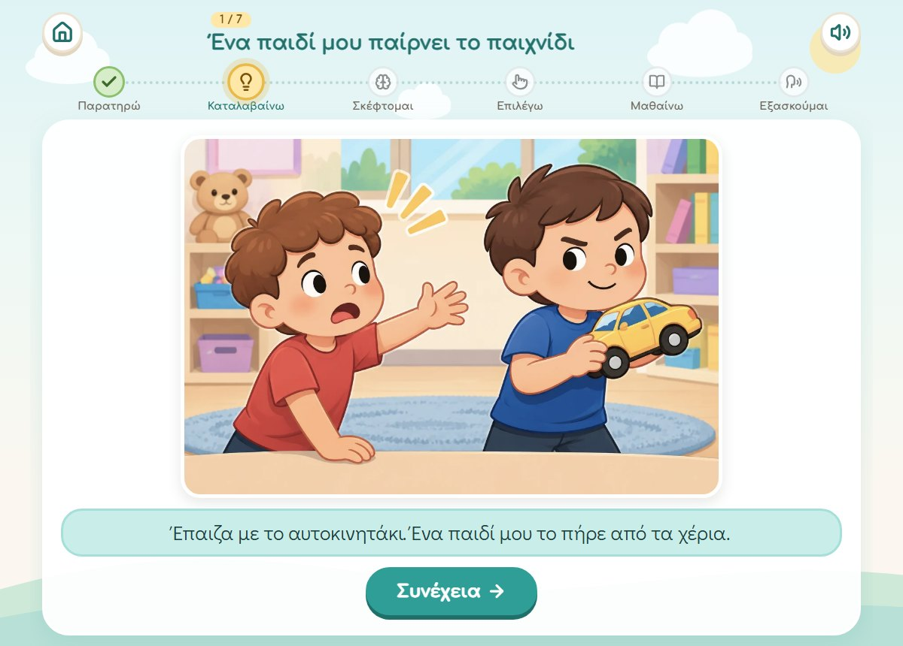

Κοινωνικές Ιστορίες
Ένα διαδραστικό εκπαιδευτικό παιχνίδι που βοηθά τα παιδιά να αναπτύξουν κοινωνικές δεξιότητες, να κατανοήσουν καλύτερα τους άλλους και να μάθουν πώς να ανταποκρίνονται σε καθημερινές κοινωνικές καταστάσεις.
Μέσα από εικονογραφημένα σενάρια που προσεγγίζουν πραγματικές στιγμές της καθημερινότητας, τα παιδιά καλούνται να παρατηρήσουν, να κατανοήσουν τι συμβαίνει, να σκεφτούν πιθανές αντιδράσεις, να επιλέξουν την καταλληλότερη συμπεριφορά και να ανακαλύψουν γιατί αυτή αποτελεί μια θετική επιλογή.
Το παιχνίδι περιλαμβάνει έξι θεματικές ενότητες:
- Διαχειρίζομαι συγκρούσεις: Μαθαίνω να αντιμετωπίζω διαφωνίες και να βρίσκω ειρηνικές λύσεις.
- Παίζω με άλλους: Εξασκούμαι στη συνεργασία, στην εναλλαγή σειράς και στο ομαδικό παιχνίδι.
- Κατανοώ τους άλλους: Αναγνωρίζω τα συναισθήματα και τις ανάγκες των γύρω μου και καλλιεργώ την ενσυναίσθηση.
- Επικοινωνώ σωστά: Μαθαίνω να εκφράζομαι, να ζητώ βοήθεια και να επικοινωνώ με κατάλληλους τρόπους.
- Καταλαβαίνω τους κοινωνικούς κανόνες: Ανακαλύπτω πώς λειτουργούμε σε διαφορετικά κοινωνικά περιβάλλοντα και περιστάσεις.
- Διαχειρίζομαι δύσκολες καταστάσεις: Μαθαίνω να αναγνωρίζω προβληματικές ή απαιτητικές καταστάσεις και να επιλέγω ασφαλείς τρόπους αντιμετώπισης.
Ένας διαφορετικός τρόπος μάθησης
Κάθε κοινωνική ιστορία ακολουθεί μια οργανωμένη μαθησιακή πορεία έξι σταδίων:
- Παρατηρώ: Βλέπω την εικόνα και αναγνωρίζω τι συμβαίνει.
- Καταλαβαίνω: Επεξεργάζομαι την κατάσταση και προσπαθώ να κατανοήσω τα συναισθήματα και τις ανάγκες των εμπλεκομένων.
- Σκέφτομαι: Αναλογίζομαι τι μπορεί να συμβαίνει και ποιες επιλογές υπάρχουν.
- Επιλέγω: Διαλέγω ανάμεσα σε διαφορετικές πιθανές αντιδράσεις.
- Μαθαίνω: Λαμβάνω άμεση ανατροφοδότηση και κατανοώ γιατί μια συμπεριφορά είναι κατάλληλη ή ακατάλληλη.
- Εξασκούμαι: Προσπαθώ να εκφράσω με δικά μου λόγια τι θα έλεγα ή πώς θα αντιμετώπιζα τη συγκεκριμένη κατάσταση.
Προσαρμόζεται στις δυνατότητες κάθε παιδιού!
Μέσα από τις ρυθμίσεις του παιχνιδιού, ο εκπαιδευτικός μπορεί να προσαρμόσει τον αριθμό των διαθέσιμων απαντήσεων σε κάθε δραστηριότητα, επιλέγοντας λιγότερες ή περισσότερες επιλογές, ανάλογα με το μαθησιακό επίπεδο και τις ανάγκες του παιδιού.
Παράλληλα, το παιχνίδι έχει σχεδιαστεί με γνώμονα την προσβασιμότητα και τη συμπερίληψη, προσφέροντας δυνατότητες συμμετοχής σε μη λεκτικά παιδιά, καθώς και σε παιδιά που χρησιμοποιούν διακόπτη (switch access).
Έτσι, κάθε παιδί μπορεί να συμμετέχει ενεργά στη μαθησιακή διαδικασία, να εκφράζει τις επιλογές του και να εξασκεί κοινωνικές δεξιότητες με τρόπο προσαρμοσμένο στις δικές του δυνατότητες.
Στόχος δεν είναι απλώς να επιλέξει το παιδί τη σωστή απάντηση, αλλά να κατανοήσει το κοινωνικό νόημα πίσω από κάθε συμπεριφορά και να μπορεί σταδιακά να μεταφέρει όσα μαθαίνει στην πραγματική ζωή.
▶ Παίξε
▶ Παίξε